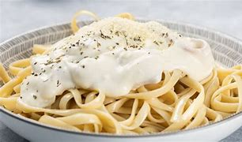

Macarrão ao Molho Branco
Ingredientes
- 500g de macarrão (de sua preferência)
- 2 colheres de sopa de manteiga
- 1 cebola picada
- 2 dentes de alho picados
- 2 colheres de sopa de farinha de trigo
- 500ml de leite
- 1 caixa de creme de leite
- Sal a gosto
- Pimenta-do-reino a gosto
- Noz-moscada a gosto
- Queijo parmesão ralado a gosto
Modo de Preparo
- Cozinhe o macarrão conforme as instruções da embalagem. Escorra e reserve.
- Em uma panela, derreta a manteiga e refogue a cebola e o alho até ficarem dourados.
- Adicione a farinha de trigo e mexa bem até formar uma mistura homogênea.
- Adicione o leite aos poucos, mexendo sempre, até o molho começar a engrossar.
- Acrescente o creme de leite e misture bem.
- Tempere com sal, pimenta-do-reino e noz-moscada a gosto.
- Misture o molho branco ao macarrão cozido.
- Sirva quente, polvilhado com queijo parmesão ralado.